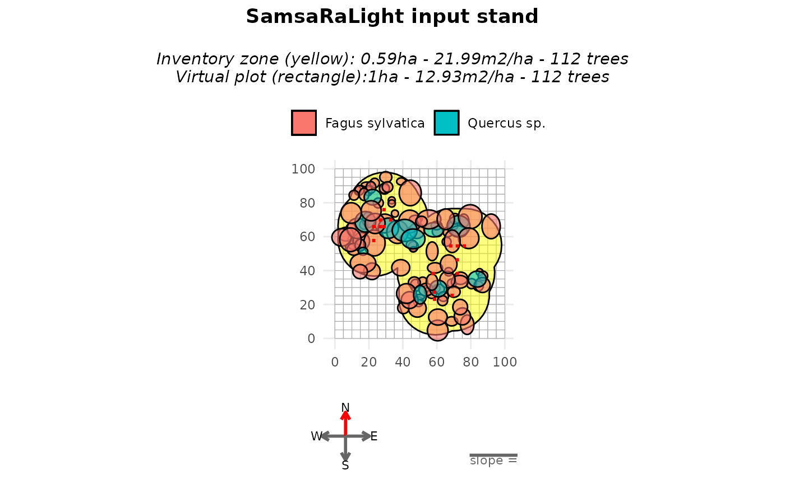
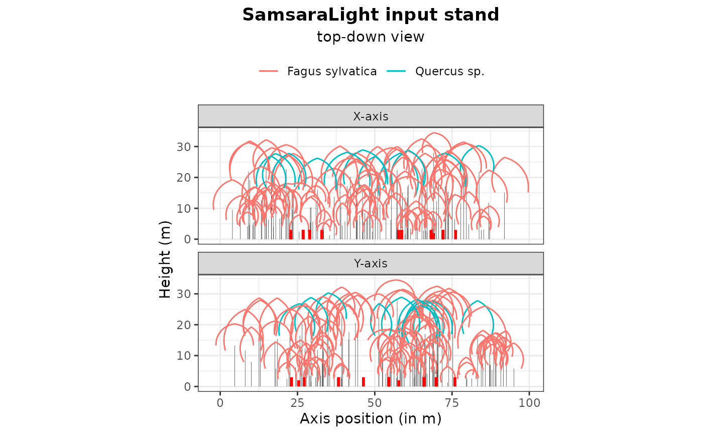
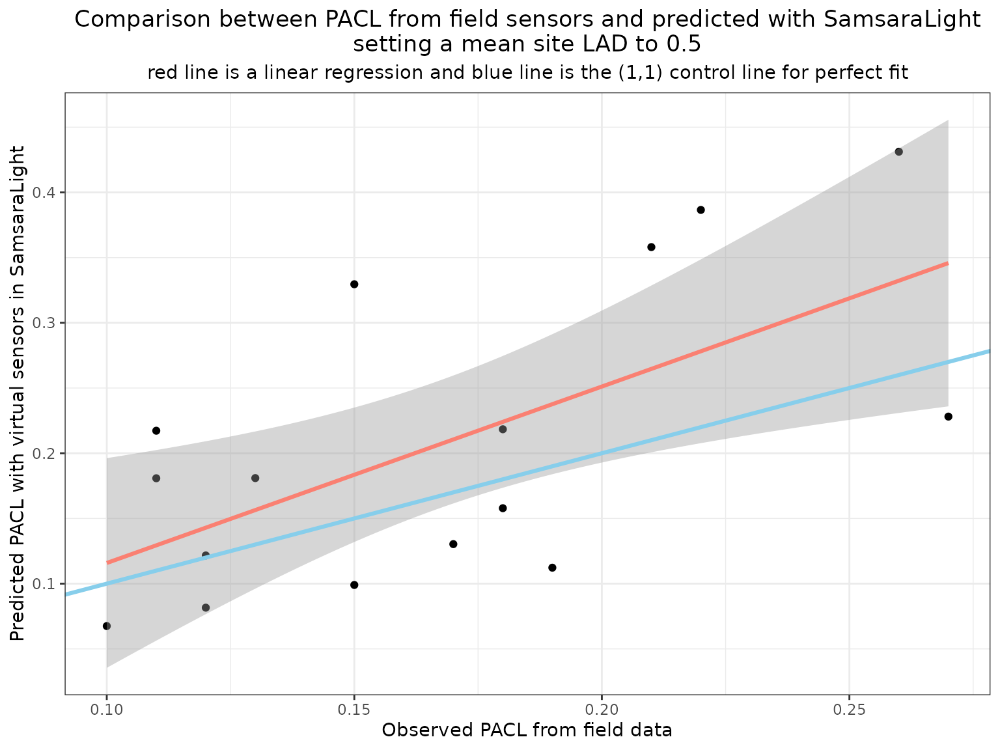

Implement virtual sensors
Source:vignettes/web_only/5a-virtual_sensors_concept.Rmd
5a-virtual_sensors_concept.RmdIntroduction
Virtual sensors allow us to estimate the amount of radiation reaching specific locations in the stand, such as the forest floor. In this vignette, we show how to define and use virtual sensors in SamsaRaLight, and how sensor outputs can be compared with field measurements of percentage of above canopy light (PACL).
Measuring light in the field
In forest ecosystems, light availability at the ground level can be measured using direct sensors (quantum sensors, dataloggers) or indirect methods such as hemispherical photography. These measurements provide estimates of transmitted radiation or PACL at specific locations. In SamsaRaLight, virtual sensors are designed to reproduce such measurements within simulated stands.
Defining sensors in a virtual stand
In the model, a sensor represents a point where incoming radiation is
recorded. Sensors are defined by their spatial coordinates and height
over the ground and are provided as a dedicated data.frame when creating
the stand. Measurements of PACL are not required as input data for the
model, only id_sensor, x, y and
h_m variables.
The following example shows the sensor configuration used in the
cloture20 dataset.
SamsaRaLight::data_cloture20$sensors
#> id_sensor x y h_m pacl pacl_direct pacl_diffuse
#> 1 1 22.00 56.64 2 0.11 0.13 0.10
#> 2 2 71.22 53.45 3 0.22 0.28 0.16
#> 3 3 75.30 53.45 3 0.26 0.31 0.21
#> 4 4 71.22 45.27 3 0.15 0.13 0.16
#> 5 5 71.22 37.21 3 0.13 0.08 0.17
#> 6 6 56.88 37.21 3 0.18 0.12 0.22
#> 7 7 68.11 24.30 2 0.27 0.29 0.24
#> 8 8 57.84 22.00 3 0.18 0.21 0.15
#> 9 9 57.84 26.11 3 0.10 0.12 0.09
#> 10 10 67.34 53.45 3 0.21 0.26 0.17
#> 11 11 22.00 64.82 3 0.17 0.20 0.15
#> 12 12 25.97 64.82 3 0.19 0.24 0.15
#> 13 13 25.97 68.74 3 0.12 0.09 0.14
#> 14 14 28.08 74.86 3 0.11 0.03 0.18
#> 15 15 32.00 68.74 3 0.12 0.07 0.17
#> 16 16 28.08 64.82 3 0.15 0.18 0.13An input sensors data.frame structure can be checked using the
function SamsaRaLight::check_sensors()
SamsaRaLight::check_sensors(SamsaRaLight::data_cloture20$sensors)
#> Sensors table successfully validated.Sensors are included in the stand definition using the
sensors argument of create_sl_stand().
stand_cloture <- SamsaRaLight::create_sl_stand(
# Tree inventory
trees_inv = SamsaRaLight::data_cloture20$trees,
core_polygon_df = SamsaRaLight::data_cloture20$core_polygon,
# STand geometry
cell_size = 5,
latitude = SamsaRaLight::data_cloture20$info$latitude,
slope = SamsaRaLight::data_cloture20$info$slope,
aspect = SamsaRaLight::data_cloture20$info$aspect,
north2x = SamsaRaLight::data_cloture20$info$north2x,
# Define sensors
sensors = SamsaRaLight::data_cloture20$sensors
)
#> SamsaRaLight stand successfully created.Once the stand is created, their presence can be checked by printing
or plotting the object. Sensors appear as red symbols in the graphical
outputs and can be hidden if needed (add_sensors = F
argument).
print(stand_cloture)
#> SamsaRaLight stand of 1 ha with 112 trees and 16 sensors (20 x 20 cells, 5 m)
plot(stand_cloture)
plot(stand_cloture, top_down = TRUE)
Obtaining sensor outputs
After defining the sensors, the model is run in the usual way. When
only sensor outputs are required, the argument
sensors_only = TRUE can be used to reduce computation time.
In this example, we compute the full output for illustration
purposes.
out_cloture <- SamsaRaLight::run_sl(
sl_stand = stand_cloture,
monthly_radiations = SamsaRaLight::data_cloture20$radiations,
detailed_output = TRUE,
sensors_only = FALSE
)
#> parallel mode disabled because OpenMP was not available
#> SamsaRaLight simulation was run successfully.Sensor-level results are stored following the same structure as cell
outputs and include total, direct, and diffuse components when
detailed_output = TRUE. Unlike cells, sensor energy is
computed on a horizontal plane, which makes it directly comparable with
most field measurements.
out_cloture$output$light$sensors
#> id_sensor e e_direct e_diffuse pacl pacl_direct pacl_diffuse
#> 1 1 817.4559 425.40610 392.0498 0.21726347 0.24757768 0.19178300
#> 2 2 1454.4341 716.25729 738.1768 0.38655958 0.41684714 0.36110152
#> 3 3 1622.3084 788.75348 833.5549 0.43117721 0.45903844 0.40775859
#> 4 4 1240.0123 404.74326 835.2691 0.32957054 0.23555232 0.40859712
#> 5 5 680.8260 176.53401 504.2920 0.18094998 0.10273919 0.24668969
#> 6 6 593.9706 128.45331 465.5173 0.15786554 0.07475721 0.22772186
#> 7 7 858.2436 405.83814 452.4055 0.22810404 0.23618952 0.22130782
#> 8 8 821.6580 397.79317 423.8648 0.21838030 0.23150752 0.20734629
#> 9 9 253.9889 132.70715 121.2817 0.06750518 0.07723286 0.05932862
#> 10 10 1347.1743 693.37862 653.7956 0.35805205 0.40353222 0.31982390
#> 11 11 490.3601 285.78999 204.5701 0.13032792 0.16632395 0.10007163
#> 12 12 422.3859 263.06666 159.3193 0.11226176 0.15309943 0.07793584
#> 13 13 307.0776 59.24406 247.8335 0.08161509 0.03447884 0.12123525
#> 14 14 680.3499 62.72809 617.6218 0.18082343 0.03650647 0.30212838
#> 15 15 457.6489 81.03445 376.6145 0.12163396 0.04716040 0.18423236
#> 16 16 372.5266 214.53832 157.9883 0.09901014 0.12485693 0.07728474
#> punobs punobs_direct punobs_diffuse
#> 1 0.59504353 0.6521300 0.5331001
#> 2 0.82050838 0.8237331 0.8173794
#> 3 0.85569064 0.8616030 0.8500961
#> 4 0.78413732 0.6482008 0.8500076
#> 5 0.58082708 0.2665100 0.6908579
#> 6 0.66061987 0.2641992 0.7700069
#> 7 0.76225271 0.7478208 0.7751991
#> 8 0.70538618 0.7032524 0.7073887
#> 9 0.07753127 0.0000000 0.1623664
#> 10 0.81094145 0.8212472 0.8000118
#> 11 0.33330079 0.3169804 0.3561008
#> 12 0.35900030 0.3691445 0.3422504
#> 13 0.50439532 0.4545890 0.5163014
#> 14 0.82227653 0.5574548 0.8491729
#> 15 0.74476584 0.6549218 0.7640972
#> 16 0.34946436 0.3930375 0.2902947Comparing observed and simulated PACL
We can now compare simulated PACL values with field measurements collected at the sensor locations. The following figure shows the relationship between observed and predicted PACL for an initial LAD value of 0.5. When predictions are systematically higher than observations, the model simulates too much transmitted light. This indicates that foliage density is underestimated and that LAD should be increased. Conversely, systematic underestimation would suggest excessive attenuation.
dplyr::left_join(
SamsaRaLight::data_cloture20$sensors %>%
dplyr::select(id_sensor, pacl) %>%
dplyr::rename_at(vars(-"id_sensor"), ~paste0(., "_obs")),
out_cloture$output$light$sensors %>%
dplyr::select(id_sensor, pacl) %>%
dplyr::rename_at(vars(-"id_sensor"), ~paste0(., "_pred")),
by = "id_sensor"
) %>%
dplyr::mutate(
diff_pacl = pacl_obs - pacl_pred
) %>%
ggplot(aes(y = pacl_pred, x = pacl_obs)) +
geom_point() +
geom_smooth(method = "lm", formula = y ~ x, color = "salmon", linewidth = 1.1) +
geom_abline(intercept = 0, slope = 1, color = "skyblue", linewidth = 1.1) +
xlab("Observed PACL from field data") +
ylab("Predicted PACL with virtual sensors in SamsaraLight") +
labs(title = "Comparison between PACL from field sensors and predicted with SamsaraLight\nsetting a mean site LAD to 0.5",
subtitle = "red line is a linear regression and blue line is the (1,1) control line for perfect fit") +
theme_bw() +
theme(plot.title = element_text(hjust = 0.5),
plot.subtitle = element_text(hjust = 0.5))
In this example, PACL is on average overestimated, suggesting that the default LAD value of 0.5 is slightly too low.